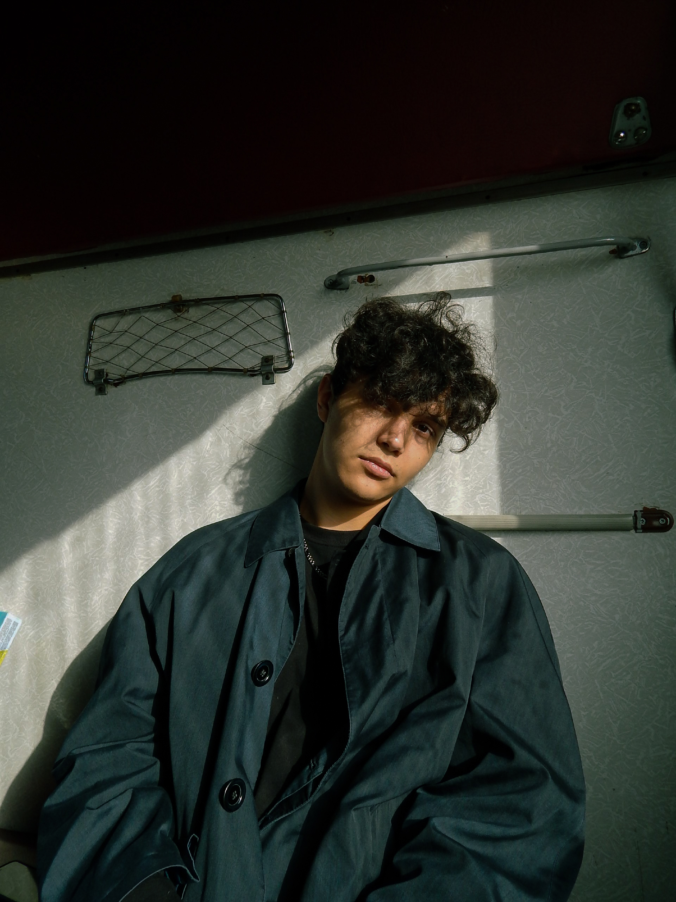

Топ 3 фотоаппаратов
| Название фотоаппарата | Цена | Характеристики |
|---|---|---|
| Nikon D850 | 76.000грн | Разрешение: 45.4MП | Объектив: крепление Nikon F | Видоискатель: оптический Тип экрана: 3,2-дюймовый сенсорный экран | Максимальная скорость непрерывной съемки: 9 кадров в секунду | Фильмы: 4K |
| Sony Alpha A7 III | 53.000грн | Тип: беззеркальная | Размер датчика: полнокадровый CMOS | Разрешение: 24,2MП | Объектив: Sony E mount | Видоискатель: EVF | Тип экрана: 3,0-дюймовый опрокидывающий сенсорный экран | Максимальная скорость непрерывной съемки: 10 кадров в секунду | Фильмы: 4K | |
| Panasonic Lumix GH5S | 60.000грн | Тип: беззеркальная | Размер сенсора: Micro Four Thirds | Разрешение: 10,2MП | Объектив: Micro Four Thirds | Тип экрана: 3,2-дюймовый сенсорный экран с переменным углом | Максимальная скорость непрерывной съемки: 12 кадров в секунду | Фильмы: 4K | |